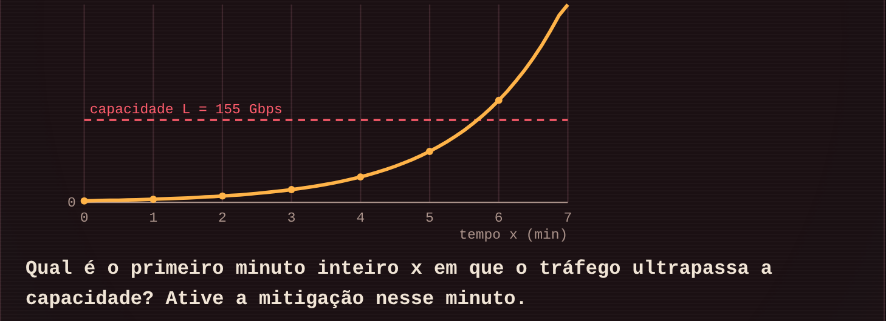
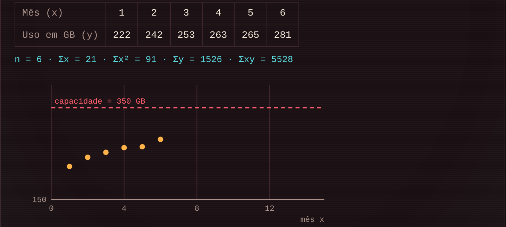

Lógica, conjuntos, funções, sistemas lineares e probabilidade costumam ser vistos de forma abstrata, mas sustentam tarefas reais de TI: firewall, capacidade de rede e risco de falha de discos.
O CYPHER é um jogo web ambientado em 2038: o jogador é SysAdmin da Nexus Corp e tem 60 minutos para barrar o grupo NullSet.
Geral: conceber e implementar um protótipo de jogo educacional que contextualize Matemática Computacional Aplicada em um incidente de TI.
Pesquisa aplicada com desenvolvimento de protótipo em HTML5, CSS3 e JavaScript (arquivo único, sem instalação). Três fases, cada uma com conceitos ligados a um cenário:


É viável dar a cada conceito uma função na narrativa e variar os números a cada partida. O efeito sobre a aprendizagem ainda não foi medido: o próximo passo é aplicar o jogo em uma turma, com questionário antes e depois.